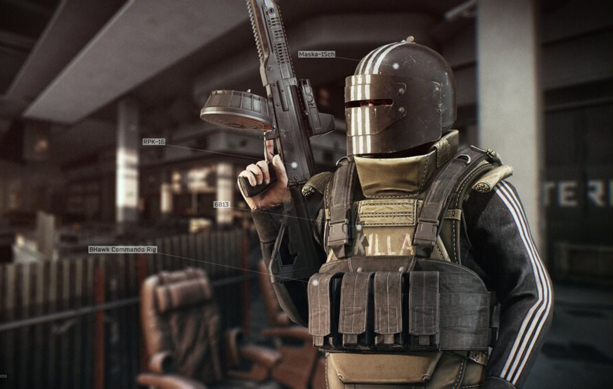

Velkommen til min nettside om Escape from Tarkov!
Her er en bilde av en boss:

Dette er en guide til Escape from Tarkov med informasjon om bosses, items og quests.
Her finner du informasjon om bosses i Tarkov.
Her finner du viktige items i spillet.
Her finner du informasjon om quests.
Marked keys brukes til å åpne spesielle rom i Escape from Tarkov. Disse rommene er kjent for å ha veldig bra loot, men også høy risiko fordi mange spillere går dit.
Marked rooms er koblet til en mystisk gruppe kalt Cultists. Disse rommene har rare symboler på veggene og ser ut til å være brukt til ritualer.
Mange spillere tror at Cultists bruker rommene til å lagre verdifulle items, og at det er derfor lootet er så bra. De dukker ofte opp om natten og er veldig farlige.
🎮 Tarkov nettside:
Gå til Escape from Tarkov
🕹️ Steam nettside:
Gå til Steam
👥 Steam Community:
Gå til Steam Community
Når du starter i Escape from Tarkov er det viktig å ta det rolig og lære kartene.
Tips: Du kommer til å dø mye i starten – det er helt normalt 😄
Boss: Reshala
Godt for beginners, quests og Dorms loot.
Boss: Shturman
Sniper map med mye open area og stash loot.
Boss: Killa
Shopping mall med tech loot og KIBA store.
Boss: Tagilla
Lite map, close combat og rask PvP.
Boss: Sanitar
Resort har high tier loot og keys.
Boss: Glukhar
Militær base med mye loot og raiders.
Boss: Zryachiy
Rogues og high tier loot.
Bosses: Kaban, Kolontay
Stort map med masse loot og fights.
Boss: Raiders
High risk / high reward map med beste loot i spillet.
Beginner map for nye spillere.
Cultists, Goons og event bosses kan spawne på flere maps.